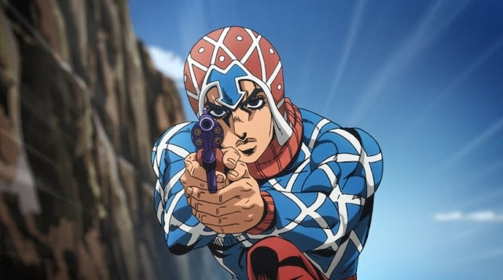
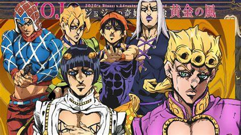
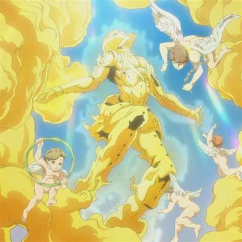
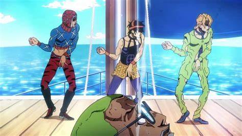
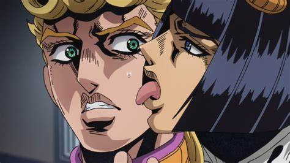

Depois de muito brigar com a vida, finalmente consegui falar de Jojo! Baita alívio. Há meses eu tento escrever uma crítica do anime. Nesta sexta-feira (8), entretanto é o dia. Vamos falar de Jojo's Bizarre Adventure: Golden Wind, a melhor surpresa que eu já tive com um anime de luta.
Golden Wind dá nocaute em você, mas é nocaute bom. Assistindo de coração aberto, você entra num mundo de referências, absurdos, violência, uma história incrivelmente boa e feels da maior qualidade. Achava que anime de luta não teria feels? Achou errado, usuário de Stand!
Então por Golden Wind ser a Parte 5 de Jojo, nada melhor do que cinco motivos para você tirar a carteirinha de Jojofag. E vai por mim, a experiência vale a pena por demais.

Quando você ver, se já não viu, um ou mais memes brincando que tudo é uma referência a Jojo, não duvide. O meme é real. Jojo's Bizarre Adventure é uma salada de referências muito bem pensadas, e muito bem utilizadas. Especificamente nos nomes, poderes e até aparências dos Stands, é estúpido de divertido tentar adivinhar/entender porque aquele Stand tem esse nome/poder.
É tudo estupidamente bem contextualizado. O Hirohiko Araki não dá ponto sem nó, e cada coisa tem razão de ser e existir. Se você tem um clique com a música, vai adorar cada referência quando ela clicar automaticamente na sua memória. Mesmo se você tiver que pesquisar, vai se divertir um monte descobrindo as conexões entre os Stands, bandas e músicas. Golden Wind obviamente não foge desse ótimo recurso.
Mas o anime continua. Por se passar na Itália, não se espante se você notar nomes comidas italianas nos nomes dos personagens. Esses também são referências.

Quando eu penso em assistir um anime de luta, meu maior medo são os personagens. Muito shonen de lutinha dedica tempo demais à porradaria, até fazem com qualidade, mas na hora de construir os personagens ou as histórias... Sai cada caso horroroso que bizarro não define. E Golden Wind, que traz "bizarro" no nome, é uma surpresa sensacional de boa, pois contraria toda expectativa do que você espera dos personagens nesse tipo de anime.
Tem luta? Tem. Mas já é diferente por ser através dos Stands. Os personagens? São muito bons. Não tem a coisa pré-definida de vilão que faz vilãozice, ou mocinho que faz mocice. Exceto por um caso, mas aí seria spoiler. Em Golden Wind todo mundo é capaz de fazer qualquer coisa, boa ou ruim. É uma visão bem mais realista do nosso mundo, e muito bem-vindo por aparecer num shonen.
A gangue do Bruno Bucciarati é fantástica. Mista, Fugo, Narancia, Abbacchio e Giorno Giovanna não agem de forma forçada. Suas personalidades são bem diferentes, mas se encaixam com perfeição. As histórias de cada um são pesadas, mas bem elaboradas, fazem você se simpatizar com eles, mesmo sendo membros de uma gangue.
Fora que amizade entre esses seis malditos vai fazer você rir demais, e passar nervoso à vontade em todos os episódios. Na data deste texto, saiu o 21.5, que é um resumão dos episódios mais recentes. O roteiro não poupa eita atrás de eita.

Golden Wind se passa na Itália, inicialmente em Nápoles. É bizarro (viu?) um anime fora do Japão, mas é uma surpresa bem-vinda. Giorno é um "ladrão de meio período", cuja ligação com a família Joestar é... Interessante. Embora o seu pai seja o pior sujeito possível, o sonho do Giorno é diferente. Ficar mais forte? Nope. O sonho do Giorno é virar um "Gang-Star".
Para isso, ele decide entrar para máfia que controla a Itália. Isso leva a conhecer o Bruno, membro da Passione e usuário de Stand. Apesar da treta inicial, eles descobrem que seus ideais são parecidos. Isso inclui discordar da Passione usar violência contra inocentes, e a venda de drogas. Bruno então aceita ajudar Giorno em seu sonho: tornar-se o chefe da Passione, e reformar a organização.
O roteiro de Golden Wind tem momentos que fazem coçar a cabeça. Mesmo assim, os prós superam os contras, e você ignora isso para ter uma experiência muito boa. Os absurdos são absurdos, mas você se envolve tanto que releva. E o protagonismo? É um tema que causa polêmica, mas não aqui.
Giorno é o protagonista? Sim. Ele carrega o anime nas costas? Não. Às vezes ele sai com umas ideias da "inteligência misteriosa de protagonista", mas não fere o anime. O roteiro de Golden Wind tem muita consciência. Sabe criar bem o confronto de lealdades, é imprevisível, é absurdo, e não foge da violência. A violência é até bem visual. Desde Hakata Tonkotsu Ramens não vejo um anime de luta com roteiro tão bom.

Jojo faz totalmente jus ao título de bizarro. É um monte de coisa acontecendo ao mesmo tempo, e é tanta informação pra você prestar atenção, que fica fácil se perder. Mas nada tema! Jojo te ajuda com da forma mais inteligente: utilizando o recurso de exposição. Ou auto-exposição. Não sei o nome ao certo, mas vou explicar.
O cinema tem muito desse roteiro burro, que explica tudo para o espectador como se ele não fosse capaz de entender sozinho. Tipo o personagem anunciar que vai fazer tal coisa por motivo AB, sabe? Golden Wind faz isso. O que é ótimo, pois muitos momentos são difíceis de entender. A direção faz essas jogadas sem subestimar a inteligência de quem assiste. Ao invés de você se sentir burro, você se sente ainda mais parte da trama.

Foi o detalhe "mais besta" que me incentivou a assistir Golden Wind. Você se acostumou com animes de traços agressivos, "pontudos" como os cabelos dos Saijayins, os trajes ninjas de Naruto, ou todo aquele visual espacial/mecânico de Gundam, com tons frios e etc. Jojo é um anime literalmente redondo, saturado e com senso de moda questionável.
As cores principalmente dos personagens, são saturadas, fortes e marcantes. Os figurinos... No início dá vontade de rir e você pensa God, why?, mas depois você nem liga. O traço dos olhos é redondo e muito marcante, pois parece que todo mundo em Jojo usa maquiagem, risos. Olhos grandes, narizes redondos, cabelos estranhos... Sabe o Glam rock? Jojo é quase como uma versão anime disso.
E foi uma mudança muito boa pra mim. Um refresco para quem tinha enchido o saco com o traço de Dragon Ball e afins. No começo eu fiquei bem errr, mas hoje em dia não tem como não fazer piada com o peito pelado do Giorno, as presilhas de cabelo do Bruno, ou o grande "A" que o Abbaccio usa como fivela de cinto. É cafona demais, mas se é Jojo, a gente perdoa.